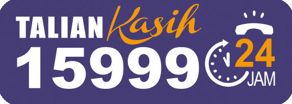

About This Initiative
CTRL+SAFE is a cybersecurity awareness initiative designed for teenagers aged 13 to 18. It focuses on helping young users recognise online grooming behaviours, understand how online predators build trust, and learn what actions to take when a conversation becomes unsafe.
Teenagers often use social media, online games, messaging apps, and content-sharing platforms to communicate. These spaces can be fun and useful, but they can also be misused by predators who pretend to be friendly, supportive, or trustworthy. CTRL+SAFE uses simple explanations and interactive scenarios to make online safety easier to understand.
Recognise
Learn to notice grooming signs such as secrecy, flattery, gifts, pressure, and private chat requests.
Think
Practise making safe decisions before facing similar situations in real online conversations.
Protect
Understand how to protect personal information, avoid manipulation, and respond to threats safely.
Report
Know when and where to report unsafe behaviour, including platform reports and trusted adults.
How Grooming Often Develops
Starts with friendly messages, compliments, or emotional support.
Moves into secrecy, personal questions, gifts, or private conversations.
Turns into pressure, requests for photos, threats, blackmail, or attempts to meet.
Online Grooming Red Flags
Secrecy
They ask you to hide the conversation from parents, teachers, or friends.
Too Much Attention
They give excessive compliments or make you feel special too quickly.
Personal Questions
They ask about your school, address, routine, family problems, or private life.
Gifts or Rewards
They offer money, game credits, gifts, or favours to gain your trust.
Private Chat
They ask you to move from public spaces to private messaging apps.
Pressure or Threats
They pressure, guilt-trip, or threaten you to control your actions.
CTRL+SAFE Safety Steps
If an online conversation feels strange, secretive, uncomfortable, or threatening, do not handle it alone. Use the CTRL+SAFE steps to protect yourself and get help quickly.
1. Stop
Stop replying if someone pressures you, asks for secrets, requests private photos, or makes you feel unsafe.
2. Screenshot
Save evidence such as messages, usernames, profile links, phone numbers, photos, threats, and dates.
3. Block
Block the person to stop further contact. Do not argue, negotiate, or send more information.
4. Report
Report the account on the app or platform. If there are threats, sexual content, or exploitation, report it to the proper channels.
5. Tell
Tell a trusted adult such as a parent, teacher, counsellor, guardian, or school authority. You should not face it alone.
Where to Report in Malaysia

Talian KasihCall: 15999
WhatsApp: 019-261 5999
For abuse, child protection issues, sexual harassment, and welfare-related help.
Cyber999
Hotline: 1300-88-2999
For cybersecurity incidents such as online threats, harassment, scams, account abuse, or harmful online activity.
Police Report
Go to: Nearest police station
If there are threats, blackmail, sexual exploitation, stalking, or danger of physical harm, make a police report as soon as possible.
❗ Important Things Teenagers Should Know ❗
- Online grooming is not always obvious. It may begin with kindness, attention, gifts, or emotional support.
- A safe person will not ask you to keep secrets from your family, teachers, or friends.
- Do not share your school, address, live location, routine, passwords, private photos, or family problems with strangers online.
- If someone threatens to expose your messages or photos, do not send more. Save evidence and ask for help immediately.
- It is not your fault if someone manipulates, threatens, or pressures you online. The responsibility is on the predator, not the victim.
Interactive Online Safety Game
Would You Trust Them?
Test your online safety instincts through an interactive game that includes a chat simulator, red flag spotting challenge, and score-based learning experience.
- Chat simulator with suspicious online stranger scenarios
- Mini game to identify grooming red flags
- Score and badge-based learning experience
- Designed to make online safety more interactive and memorable
CTRL+SAFE GAME
Would You Trust Them?
Can you spot the red flags before it is too late?